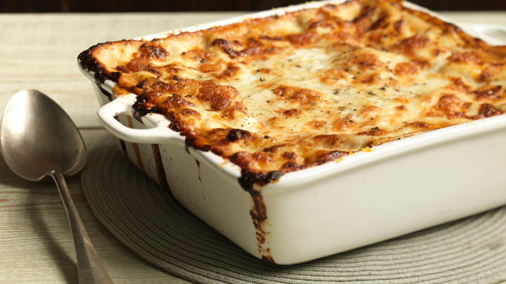

The Ultimate Lasagne

Description
The ultimate homemade lasagne, made with beef and pork, fresh pasta, Italian mozzarella and creamy béchamel. Delicious.
Ingredients
For the ragu
- 4 tbsp olive oil
- 4 celery sticks, finely chopped
- 2 carrots, finely chopped
- 1 medium onion, finely chopped
- 2 garlic cloves, peeled and crushed
- 1 sprig rosemary
- 700g/1lb 9oz beef mince
- 340g/12oz pork mince
- 1 bottle red wine (750ml/26½fl oz)
- 2 x 400g/14oz cans tomatoes, roughly chopped
- 200ml/7fl oz beef stock
- salt and freshly ground black pepper
For the bechamel sauce
- 1 litre/1¾ pints whole milk
- 2 bay leaves
- ¼ onion
- pinch freshly grated nutmeg
- 50g/2oz butter
- 50g/2oz plain flour
For the lasagne
- 14 sheets fresh lasagne pasta
- 3 125g/4½oz balls mozzarella, cut into small cubes
- small handful grated parmesan
- freshly ground black pepper
- 2 tbsp butter
Method
- Preheat the oven to 180C/350F/Gas 4.
- For the ragu, heat the olive oil in a frying pan over a low heat and fry the celery, carrots and onion for approximately 15 minutes, until softened and golden. Add the garlic and rosemary and fry for two more minutes.
- Add the beef and pork mince and cook until the liquid from the meat has been absorbed.
- Pour in approximately 400ml/14fl oz of red wine and stir well. Cook for approximately 45 minutes.
- Once the wine has evaporated, add the tomatoes and stock. Leave the mixture uncovered to cook slowly for two hours. Top up with more warm stock if necessary. Season with salt and freshly ground black pepper to taste.
- To make the bechamel sauce, place the milk in a large non-stick saucepan, add the bay leaves, onion and nutmeg and gently bring to the boil.
- In a separate saucepan melt the butter and add the flour. Beat well and cook for two minutes. Remove the milk from the heat and add a little to the flour mixture. Combine well, and when all the milk has been absorbed, add a little more. Continue to do this until all the milk has been added, whisking continually.
- For the lasagne, blanch the pasta in salted boiling water for three minutes. Spoon a third of the bechamel sauce into the bottom of a lasagne dish in a layer, then place some of the pasta strips over the top. Follow this with some of the mozzarella and parmesan, and sprinkle over freshly ground black pepper. Follow with a layer of ragu. Repeat this step twice until all the ingredients have been used up. Dot knobs of butter over the surface and cook in the oven for 30 minutes, or until golden-brown on top and completely cooked through.